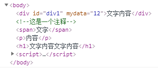

DOM的相关操作2
1.<body>
2.<div id='div1' myData='12'>文字内容</div>
3.<!--这是一个注释-->
4.<span>文字</span>
5.<p>内容</p>
6.<h1>文字内容文字内容</h1>
7.</body>
8.<script>
9.var oDiv=document.getElementById('div1');
1、document.父节点.childNodes:获取父节点下所有的子节点。
1.document.body.childNodes;
2、document.父节点.children:获取父节点下的所有元素子节点。
1.document.body.children;
3、oDiv.parentNode：oDiv的父级节点。
1.oDiv.parentNode;

4、oDiv.previousSibling：oDiv的哥哥节点。
1.oDiv.previousSibling;
在上述代码中，oDiv的哥哥节点是“换行”
5、oDiv.previousElementSibling：oDiv的哥哥元素节点。
1.oDiv.previousElementSibling;
上述代码中，oDiv没有哥哥元素节点
6、oDiv.nextSibling：oDiv的弟弟节点。
1.oDiv.nextSibling;
折行
7、oDiv.nextElementSibling：oDiv的弟弟元素节点。
1.oDiv.nextElementSibling;
8、父节点.firstChild：父节点的第一个子节点。
1.document.body.firstChild;
9、document.父节点.firstElementChild：父节点的第一个子元素节点。
1.document.body.firstElementChild;
10、document.父节点.lastChild：父节点的最后一个节点。
1.document.body.lastChild;
11、document.父节点.lastElementChild：父节点的最后一个子元素节点。
1.document.body.lastElementChild;

12、父节点.replaceChild(n,m)：在父节点下，用n标签替换m标签。
1. <body>
2. <div id='div1'></div>;
3. </body>
4. <script>
5. var oDiv=document.getElementById('div1');
6. var oBody=document.body;
7. var oH2=document.createElement('h2');
8. oBody.appendChild(oH2);
9. oBody.replaceChild(oH2,oDiv);
10. </script>
13、父节点.removeChild(n)：删除父节点下的n元素。
1. oBody.removeChild(oH2);
14、setAttribute('属性名','属性值')：添加行内属性（属性值为数字时，不用加引号）。
1. <body>
2. <div id='div1'>文字内容</div>
3. </body>
4. <script>
5. var oDiv=document.getElementById('div1');
6. oDiv.setAttribute('style','color:red');
7. oDiv.setAttribute('a',100);
15、getAttribute('属性名')：获取元素行内属性。
1. <body>
2. <div id='div1' style='color:green'>文字内容</div>
3. </body>
4. <script>
5. var oDiv=document.getElementById('div1');
6. oDiv.getAttribute('style');
16、removeAttribute('属性名')：删除行内属性。
1. <body>
2. <div id='div1' style='color:red'>文字内容</div>
3. </div>
4. <script>
5. var oDiv=document.getElementById('div1');
6. oDiv.removeAttribute('style');